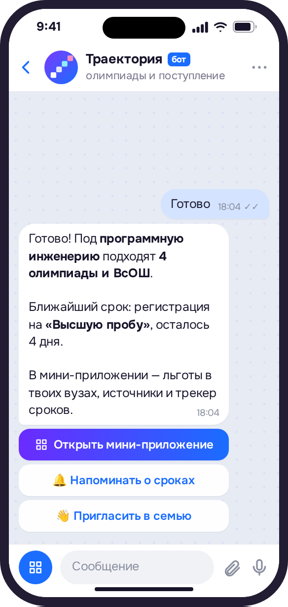
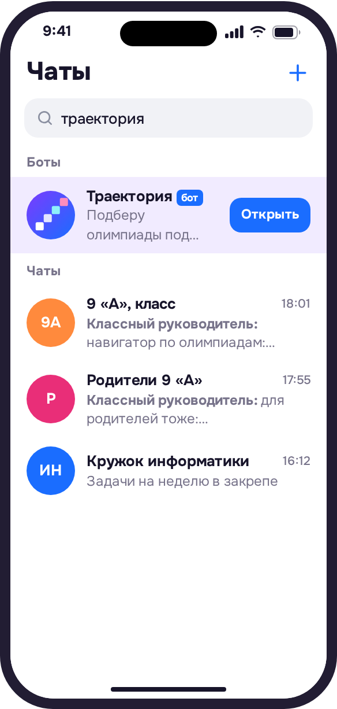
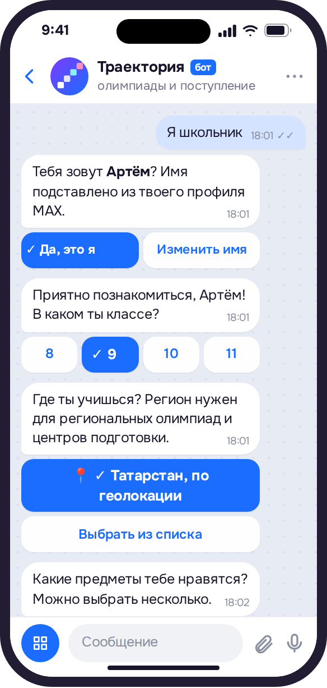
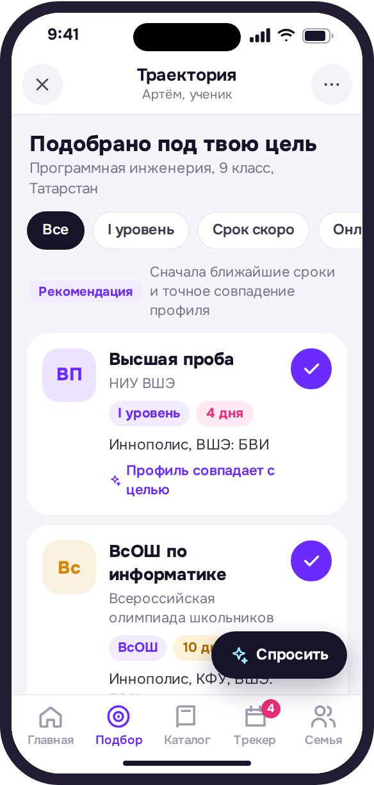
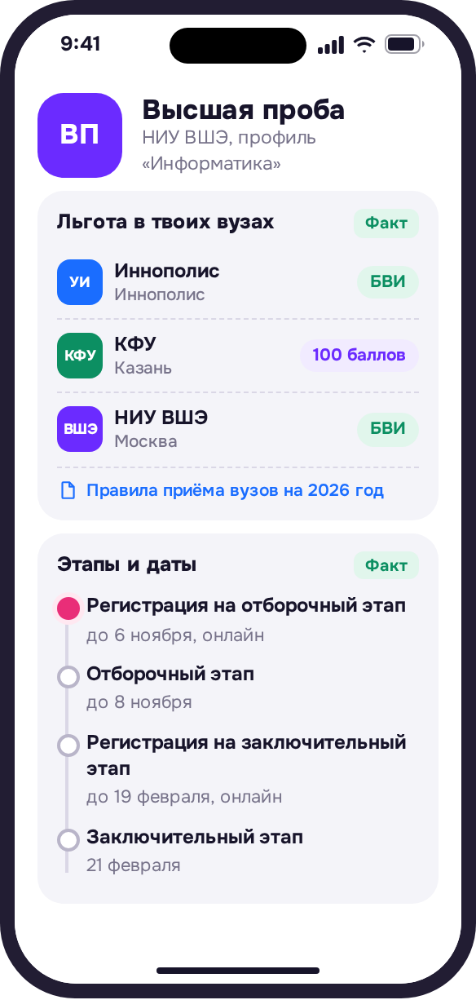
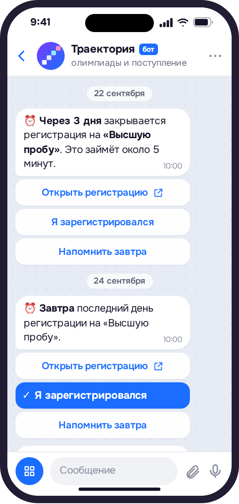
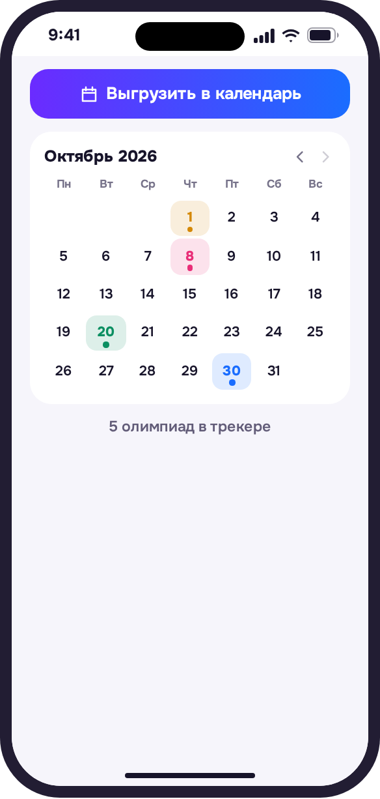
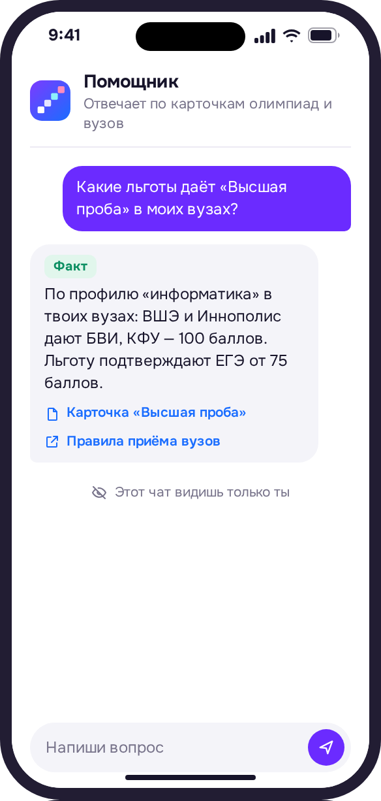
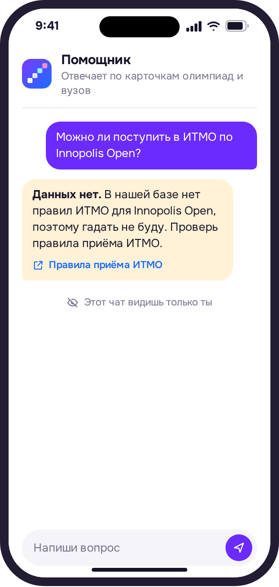

Бот и мини-приложение в MAX
Олимпиады, которые ведут в твой вуз
Бот подбирает олимпиады под цель ученика, показывает льготы в его вузах со ссылкой на источник и напоминает о сроках всей семье.

Льгота в твоих вузах
МФТИБВИ
ИТМО100 баллов
Через 3 дня регистрация на «Высшую пробу»
Олимпиада — короткий путь на бюджет. Только дорогу к нему никто не показывает
ВсОШ и ещё
83
олимпиады из перечня дают льготы
У «Высшей пробы»
25
профилей, у каждого свой уровень и классы
МФТИ за год сократил
50→35
олимпиад: каждый вуз решает сам
Каждый четвёртый
26%
абитуриентов не хватало информации о поступлении
Всё это разбросано по сотням сайтов, и о сроках никто не напоминает. «Траектория» собирает это в одном чате.
Перечень олимпиад на 2025/26, приказ Минобрнауки № 669; МФТИ — пресс-служба вуза, 2025; опрос 4005 первокурсников, 2025.
Три шага, чтобы начать пользоваться
«Траектория» живёт в одном чате MAX: сначала бот задаёт пару вопросов, потом там же открывается мини-приложение.
Шаг 1
Откройте бота в MAX
Кнопка ведёт прямо в чат. Ничего устанавливать не нужно.

Шаг 2
Ответьте на вопросы бота
Класс, регион, любимые предметы, цель и вузы.

Шаг 3
Откройте мини-приложение
Бот пришлёт кнопку «Открыть мини-приложение» — подборка откроется поверх чата.

Что внутри мини-приложения
Это продолжение того же чата: ответы боту уже в профиле, а напоминания бот пришлёт туда же.
В мини-приложении
Льгота именно в ваших вузах
Сразу видно, что даст олимпиада в каждом вашем вузе: БВИ — поступление без экзаменов или 100 баллов ЕГЭ.

В мини-приложении и в чате
Ни одной пропущенной регистрации
Трекер в одну кнопку, напоминания в чат и выгрузка сроков в ваш календарь.


В мини-приложении
ИИ-помощник, который не выдумывает
Отвечает только по базе, у каждого факта есть первоисточник. Нет ответа — так и скажет.


Одна траектория на ученика и его семью
Ученику
Понятный путь к своему вузу
3+ олимпиад под твою цель
Льгота в каждом твоём вузе
Напоминания о сроках в чат
ИИ-помощник ответит на вопросы
Родителю
Видите сроки и понимаете льготы
Та же траектория, что у ребёнка
Напоминания приходят и вам
Предлагаете олимпиаду ребёнку
ИИ-помощник объяснит льготы
Скоро
Учителю
Ссылка на бота для чата класса в пару касаний.
От цели до олимпиад и вузов в одном месте
В каталоге олимпиад школьник ищет сам. «Траектория» сама подбирает олимпиады, показывает условия вузов этого ученика и напоминает о сроках.
Каталог олимпиад
Олимпиады под цель ищете сами Условия вузов в десятках PDF Родитель разбирается отдельно
«Траектория»
Подборка под цель и вузы ученика Льгота в каждом вузе с источником
Вузы, которые уже есть в базе
МГУ
СПбГУ
ВШЭ
МФТИ
ИТМО
НГУ
КФУ
Иннополис
Сеченовский
Казанский ГМУ
Частые вопросы
Нужно ли что-то устанавливать?
−
Нет. Бот и мини-приложение работают внутри MAX: достаточно открыть чат с ботом. Мини-приложение открывается поверх чата, профиль уже заполнен ответами из диалога.
Что такое БВИ?
+
Зачисление без вступительных испытаний: с дипломом победителя или призёра можно поступить без конкурса по баллам ЕГЭ на направление по профилю олимпиады. БВИ можно использовать только в одном вузе и на одной программе.
Что значит «100 баллов»?
+
Диплом засчитывается как 100 баллов по вступительному испытанию профильного предмета. Остальные экзамены сдаются как обычно. Эту льготу можно использовать в каждом вузе.
Нужно ли сдавать ЕГЭ, если есть диплом?
+
Да. Льготу по олимпиаде из перечня подтверждают ЕГЭ по профильному предмету не ниже 75 баллов, а вуз вправе поставить порог выше.
Как удалить данные?
+
Создатель траектории удаляет её вместе с данными командой /delete. Остальные участники могут выйти из траектории во вкладке «Семья».
Начните с одного сообщения
Откройте бота, ответьте на вопросы и получите олимпиады, которые ведут в ваши вузы.
Открыть в MAX
Бот и мини-приложение про олимпиады и поступление в MAX.
Проект команды «Сигма» для студенческого хакатона MAX, трек «Образовательные решения». Сроки части олимпиад демонстрационные. На экранах примеры данных.